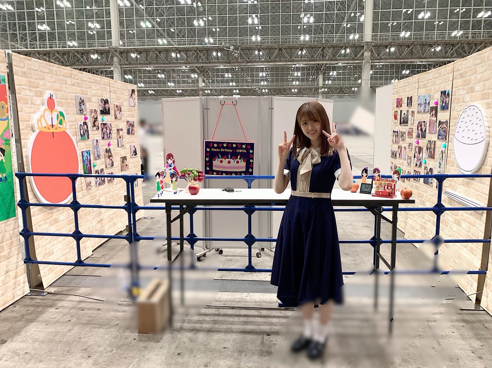
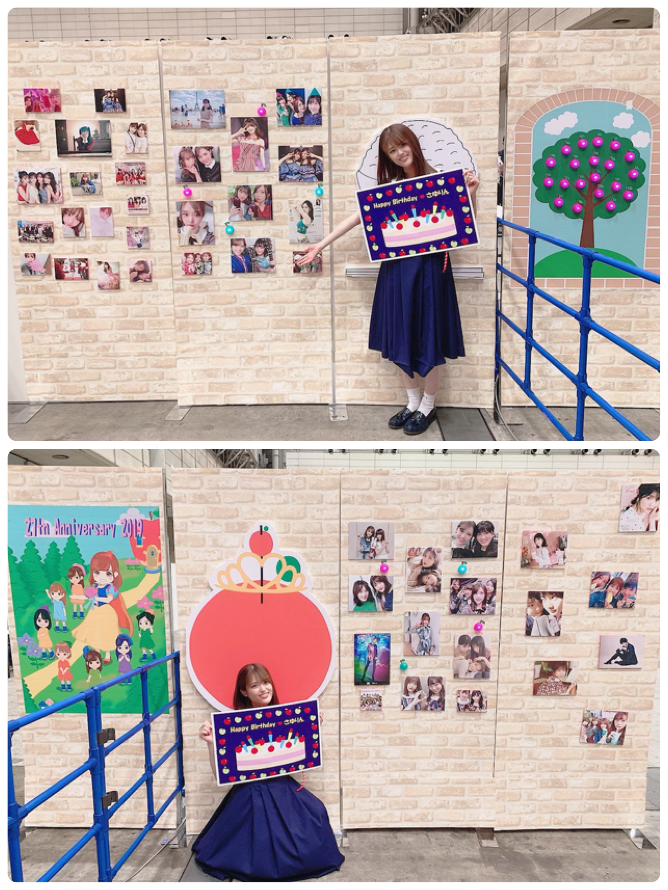
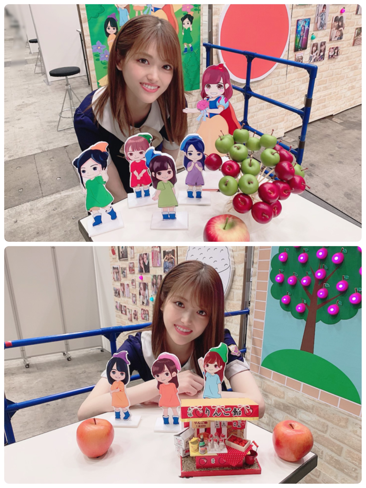
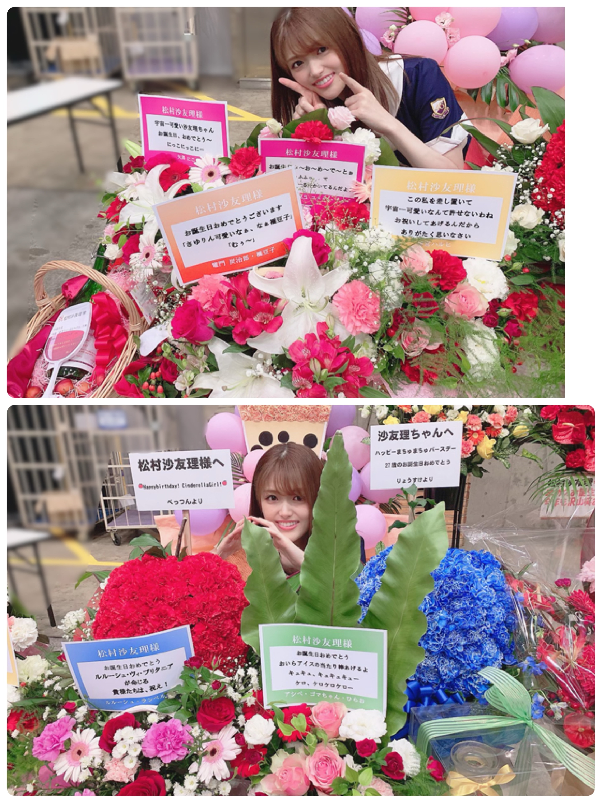
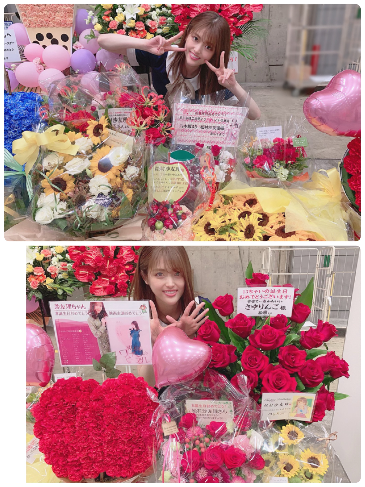

2019/0826Mon自慢っ(o・・o)
松村沙友理です！
先日は 握手会ありがとうございました！
誕生日が近いので
レーンがとっても可愛く
飾られていました^ ^♡

一つ一つの飾りも細かくこだわってくれていて
とっても可愛かったです^ ^♡♡

レーンにいらした方が
美術館みたいに 写真を眺めていて
その姿を見るのも好きでした(*´∀｀*)

大小さまざまなりんごが
たくさんあります♡


お花もたくさんで
とっても幸せです！(๑˃̵ᴗ˂̵)♡
こんな可愛いレーンで 一日過ごせて
とっても幸せでした！
みてＴは
我ながら インパクトが強くて
何回見ても 驚きますね(O_O)
みなさん 着こなしてて凄かったです！笑
では、また！
2019/08/26 16:30
コメント(476)
可愛すぎ。以上です。
更新ありがとうございました。
更新ありがとうございました。
まちゅお誕生日おめでとうございますっ！！
乃木中でまちゅが見られないのが寂しくて仕方ないです。
東京ワインピープルの映画のチラシ沢山もらってきました！！外のお仕事もアイドルのお仕事も頑張ってください！！応援してます！！24時間テレビでのデコ出しまちゅ可愛かったです！！大好きです！！名古屋の全握いくので待っててください。
乃木中でまちゅが見られないのが寂しくて仕方ないです。
東京ワインピープルの映画のチラシ沢山もらってきました！！外のお仕事もアイドルのお仕事も頑張ってください！！応援してます！！24時間テレビでのデコ出しまちゅ可愛かったです！！大好きです！！名古屋の全握いくので待っててください。
まちゅ
確かにみてTのインパクトかなり大きかったよ。
生で見たけど。
8月の後半って誕生日メンバー多いんだよねー。
20.23.24.27.28
以外にも前半でもいるしね。
確かにみてTのインパクトかなり大きかったよ。
生で見たけど。
8月の後半って誕生日メンバー多いんだよねー。
20.23.24.27.28
以外にも前半でもいるしね。
握手会お疲れ様！！
ツアー頑張ってね
ツアー頑張ってね
まっちゅん可愛すぎて
更新ありがとう!
全国握手会in幕張メッセ行きました!
ミニライブでのまちゅめっちゃかわいかったです!
新制服も似合ってる!
もうすぐまちゅの誕生日ですね
少し早いけどお誕生日おめでとう!
これからも乃木坂の中心メンバーとしてがんばってね!
神宮球場での全国ツアー暑いだろうけど体調に気をつけて頑張ってね!
全国握手会in幕張メッセ行きました!
ミニライブでのまちゅめっちゃかわいかったです!
新制服も似合ってる!
もうすぐまちゅの誕生日ですね
少し早いけどお誕生日おめでとう!
これからも乃木坂の中心メンバーとしてがんばってね!
神宮球場での全国ツアー暑いだろうけど体調に気をつけて頑張ってね!
まちゅお誕生日おめでとう！！
幕張には行けなかったけど遠くからお祝いメッセージ送るよ！
あとらじらーで読んでくれてありがとう！！
幕張には行けなかったけど遠くからお祝いメッセージ送るよ！
あとらじらーで読んでくれてありがとう！！
全てが可愛い！
まっつん、こんばんは！orこんにちは！
今日も一日お疲れ様！
全握お疲れ様。
すごく可愛いレーンに装飾されてますね。
見てみたかったです。明日は松村さんの誕生日。
このあとの生ドル楽しみにしてます。
ちょっとだけ早いけど誕生日おめでとう！
p.s.
いつもブログ更新ありがとう☆
今日も一日お疲れ様！
全握お疲れ様。
すごく可愛いレーンに装飾されてますね。
見てみたかったです。明日は松村さんの誕生日。
このあとの生ドル楽しみにしてます。
ちょっとだけ早いけど誕生日おめでとう！
p.s.
いつもブログ更新ありがとう☆
早いけどたんおめ
まちゅと誕生日同じです！
お互いにいい一年にしましょうね！
お互いにいい一年にしましょうね！
まちゅ〜！！
握手会お疲れ様でした！
可愛くて綺麗で、まちゅと握手出来て幸せでした♡♡
これからも応援してます！！！
握手会お疲れ様でした！
可愛くて綺麗で、まちゅと握手出来て幸せでした♡♡
これからも応援してます！！！
楽しそうなさゆりんごが最高だよね！
カワイイ！
カワイイ！
みてTは流石やった
握手会行けなかった
明日はお誕生日ですね❤︎❤︎
さゆりちゃんが幸せな1日を過ごせますように！
会えないけどめちゃくちゃお祝いしときます！
明日はお誕生日ですね❤︎❤︎
さゆりちゃんが幸せな1日を過ごせますように！
会えないけどめちゃくちゃお祝いしときます！
まちゅブログありがとう☺︎
握手会もお疲れ様でした！私は行けなかったけどレーンめっちゃかわいい
明日はまちゅの誕生日！！盛大にお祝いします♡
少し早いけど誕生日おめでとう◎ずっとずっと大好きです！応援してます
握手会もお疲れ様でした！私は行けなかったけどレーンめっちゃかわいい
明日はまちゅの誕生日！！盛大にお祝いします♡
少し早いけど誕生日おめでとう◎ずっとずっと大好きです！応援してます
お誕生日おめでとう！
今回の全握はお仕事で行けなくて、泣く泣く欠席でした
滅多にないまちゅに会える機会だったのに……
友達からまちゅのレーンすごい並んでたって聞いたよー！
9月にある名古屋の全握行けたら行くね！
まだまだ暑い日が続いてるね！
体調気を付けてお互い頑張ろうね！
名古屋全握いきまーす！
チャァオ～～!☆彡
まっつん、お誕生日おめでとぉ～～～⤴️⤴️❕❤️❤️❤️❤️❤️笑顔
また１年良い年でありますように～～⤴️⤴️❕❤️❤️❤️❤️❤️笑顔
☆会津＊ONEより☆彡
まちゅに初めて行きました！また行きます！
女オタですが、認知してもらえるように頑張る。
まちゅもお仕事頑張ってね〜
女オタですが、認知してもらえるように頑張る。
まちゅもお仕事頑張ってね〜
ブログ更新ありがとー！
少し早いけど、HAPPY birthday！！
乃木坂に加入した時から可愛かったけど、年々可愛さが増してくさゆりん。更に可愛さだけじゃなく、綺麗さも加わって、、、。
貴女はどこまで美しくなるのか？
間違いなくNo.1です‼️
少し早いけど、HAPPY birthday！！
乃木坂に加入した時から可愛かったけど、年々可愛さが増してくさゆりん。更に可愛さだけじゃなく、綺麗さも加わって、、、。
貴女はどこまで美しくなるのか？
間違いなくNo.1です‼️
りんごが一番！
おつかれんこん！！まっつん！！この間の全握、体調不良でいけなかった。ｺﾄｼﾊまだ一度も会えてない。ざんねん…忘れちゃうよね。(笑)元気ですか_？今日はまっつん！！の大晦日ですね。いつも、まっつん雅笑顔でいられるように！！願っていますよー！！まだまだ今日と言う日をがんばれんこん！！話をしたいです！！(笑)
さゆりん
明日、誕生日だね！
おめでとう！！
明日、誕生日だね！
おめでとう！！
まちゅー❤︎"
レーンめっちゃ可愛いですね！！
まちゅもめっちゃ可愛いです❤͟͟͞͞ ❤͟͟͞͞ =( '-' ❤ )ﾗﾌﾞﾊﾟﾝﾁ
明日ですが、少し早いですかお誕生日おめでとうございます！
素敵な1年にしてくださいね(•᎑•)
27歳になるなんてっ…見えないぐらい可愛い
レーンめっちゃ可愛いですね！！
まちゅもめっちゃ可愛いです❤͟͟͞͞ ❤͟͟͞͞ =( '-' ❤ )ﾗﾌﾞﾊﾟﾝﾁ
明日ですが、少し早いですかお誕生日おめでとうございます！
素敵な1年にしてくださいね(•᎑•)
27歳になるなんてっ…見えないぐらい可愛い
まっちゅん、こんにちは！
モトヒロです。
ブログ更新ありがとう！そして全国握手会お疲れ様でした！
レーンの装飾すごいね！１つ１つが細かく作られてて、とても可愛らしい雰囲気で並んでる時間も楽しめそう！だいたい全部展ならぬ、だいたいりんご展だね！笑
当日は残念ながら行けなかったけど、伝えたかったことはちゃんと届いてたみたいなのですごく嬉しいです。今度は直接会って想いを伝えられたらいいな！誕生日おめでとう！
今週末はいよいよ神宮公演だね！天気はどうなるかな？笑
また今度コメントするね、それじゃあまた！！
モトヒロです。
ブログ更新ありがとう！そして全国握手会お疲れ様でした！
レーンの装飾すごいね！１つ１つが細かく作られてて、とても可愛らしい雰囲気で並んでる時間も楽しめそう！だいたい全部展ならぬ、だいたいりんご展だね！笑
当日は残念ながら行けなかったけど、伝えたかったことはちゃんと届いてたみたいなのですごく嬉しいです。今度は直接会って想いを伝えられたらいいな！誕生日おめでとう！
今週末はいよいよ神宮公演だね！天気はどうなるかな？笑
また今度コメントするね、それじゃあまた！！
まつおヤッホー(*^^*)
握手会お疲れ様でした(*^^*)そっか、近日誕生日なんですね。
毎回blogやSNSに載ってるファンの方々の花や贈り物観てると、愛情込めらてて素敵過ぎて、自分もファンなんですけど感心していまいます(^^)vそれだけ乃木坂46が愛されてるグループなんやって思うと、自分も何だか嬉しいです。
それにしても、前回のグレーの制服も、今回の制服も可愛くて素敵やね。前回のグレーの制服が自分の中では衝撃で(笑)
今回も可愛くてびっくりしましたが。
ではでは、まつおq(*･ω･*)pﾌｧｲﾄ!
握手会お疲れ様でした(*^^*)そっか、近日誕生日なんですね。
毎回blogやSNSに載ってるファンの方々の花や贈り物観てると、愛情込めらてて素敵過ぎて、自分もファンなんですけど感心していまいます(^^)vそれだけ乃木坂46が愛されてるグループなんやって思うと、自分も何だか嬉しいです。
それにしても、前回のグレーの制服も、今回の制服も可愛くて素敵やね。前回のグレーの制服が自分の中では衝撃で(笑)
今回も可愛くてびっくりしましたが。
ではでは、まつおq(*･ω･*)pﾌｧｲﾄ!
まっちゅん明日誕生日やね〜！
最近なかなか会いに行けずで寂しいです。。
直接お誕生日おめでとう言いたかったです
向日葵の花束2贈りました！
赤も似合うけど黄色もめっちゃ似合う♪♪
レーンも可愛く飾れとって愛が伝わるね！！
これからもがんばってね！応援してます○
最近なかなか会いに行けずで寂しいです。。
直接お誕生日おめでとう言いたかったです
向日葵の花束2贈りました！
赤も似合うけど黄色もめっちゃ似合う♪♪
レーンも可愛く飾れとって愛が伝わるね！！
これからもがんばってね！応援してます○
まっちゅん！
好き〜！！！！
好き〜！！！！
すーき。
誕生日おめでとう！(まだちょっと早いかな笑)
さゆりちゃんにとっていい1年になりますように。。
誕生日おめでとう！(まだちょっと早いかな笑)
さゆりちゃんにとっていい1年になりますように。。
さゆりんごと初めて握手したけど、可愛いすぎ
また行きま～す
絶対行く
玲香ちゃんのセレモニー待ちの僕らの為に、じゃんけん大会等々のファンサービス素晴らしすぎ
あぁ好き…
乃木坂は女神しかおらん
また行きま～す
絶対行く
玲香ちゃんのセレモニー待ちの僕らの為に、じゃんけん大会等々のファンサービス素晴らしすぎ
あぁ好き…
乃木坂は女神しかおらん
さゆりんご可愛い(>_<)！
愛してます
愛してます
団長❗️
計画推進
期待しています
是非 成功させましょう❗️
計画推進
期待しています
是非 成功させましょう❗️
ヤッホーまちゅ〜！誕生日おめでとう！
林檎がたくさん飾られてて綺麗やね！素敵な1年になりますように
林檎がたくさん飾られてて綺麗やね！素敵な1年になりますように
さゆりんブログ更新ありがとう！今回の全握行けなかったので24thの幕張の全握行こうと思います！大好き！ちょっと早いけどお誕生日おめでとう！！
すき
神宮楽しみにしてるよー‼️
さゆりちゃん！
握手会ありがとうございました^^
可愛いさゆりちゃんにめちゃくちゃ癒された～！！
本当にさゆりんご軍団で私の結婚式来て欲しい♪
握手会ありがとうございました^^
可愛いさゆりちゃんにめちゃくちゃ癒された～！！
本当にさゆりんご軍団で私の結婚式来て欲しい♪
パンチありがとぉ！！
まっつん(笑)
忙しいのにブログ更新ありがとう〜！
沙友理ちゃんお姫様で可愛い(語彙力無し)
こんど名古屋いくね！！3月ぶりの沙友理ちゃんで楽しみ…
話したいこと沢山
見てT来てくからね！！
沙友理ちゃんお姫様で可愛い(語彙力無し)
こんど名古屋いくね！！3月ぶりの沙友理ちゃんで楽しみ…
話したいこと沢山
見てT来てくからね！！
握手会お疲れさまでした！！
わーい！！明日お誕生日ですね(^O^)
いくつになっても可愛い可愛い沙友理ちゃん♡♡
大好きです(〃▽〃)
8/27まちゅにとって幸せな日でありますように✩.*˚
わーい！！明日お誕生日ですね(^O^)
いくつになっても可愛い可愛い沙友理ちゃん♡♡
大好きです(〃▽〃)
8/27まちゅにとって幸せな日でありますように✩.*˚
ついに明日誕生日だね～
実は私も同じだよ。まちゅと同じ誕生日だなんて本当に幸せです。
お仕事頑張ってね！
中学生のふくふくより
実は私も同じだよ。まちゅと同じ誕生日だなんて本当に幸せです。
お仕事頑張ってね！
中学生のふくふくより
すごくステキです可愛いレーンですね！行きたかった…！
まちゅの可愛さと相まってとても素晴らしい空間に見えます！
みてTを着て全握行く予定だったけど、赤ちゃんを、授かったので行くのを断念しましたが、、、女の子だったら絶対に沙友理ちゃんの沙の字を使う予定です
まだまだ暑い日が続くので身体に気をつけてください！
まちゅの可愛さと相まってとても素晴らしい空間に見えます！
みてTを着て全握行く予定だったけど、赤ちゃんを、授かったので行くのを断念しましたが、、、女の子だったら絶対に沙友理ちゃんの沙の字を使う予定です
まだまだ暑い日が続くので身体に気をつけてください！
メンバーとの写真がいい感じですね！！♡かわいい！
ちょっと早いですが、誕生日おめでとう沙友理ちゃん。
永遠に美しい。名古屋の握手会で待ってます。
永遠に美しい。名古屋の握手会で待ってます。
可愛いです！
もうすぐ誕生日おめでとうございまっちゅん！！次の名古屋の握手会行かせていただきます！！楽しみにしてます！！オールナイトニッポンも楽しみです！
さゆりんご姫お誕生日おめでとう１日フライングだけど
かわいすぎて死にそうです
ずっと乃木坂にいてください
今さっきインスタも見たよ～ホントかわいすぎて恐ろしいです。
さゆりんご軍団ぜひ北九州メディアドームでのライブお待ちしてます
写真集第２弾出ることも期待しとるばい
かわいすぎて死にそうです
ずっと乃木坂にいてください
今さっきインスタも見たよ～ホントかわいすぎて恐ろしいです。
さゆりんご軍団ぜひ北九州メディアドームでのライブお待ちしてます
写真集第２弾出ることも期待しとるばい


まちゅのレーン行ったよ！！休憩終わった3時半頃かな？に女子2人が連続で釣ってください！って言って指さされてずっきゅん♡って撃ち抜かれたの！覚えてないかな？
ほんとに可愛くて疲れが全部吹き飛んだよ！大好き！！